Sản phẩm thủ công · Câu chuyện văn hóa · Trải nghiệm bản địaHandcrafted Products · Cultural Stories · Local Experiences
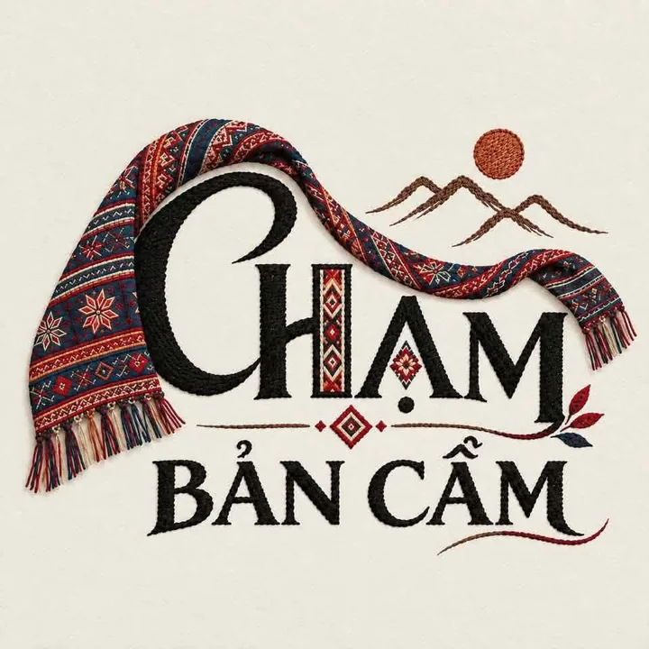
Tên doanh nghiệpBusiness Name
CHẠM BẢN CẨM
Loại hìnhBusiness Type
Công ty trách nhiệm hữu hạn (TNHH)Limited Liability Company (LLC)
Trụ sởHeadquarters
Hà Nội, Việt NamHanoi, Vietnam
Khu vực cung ứngSourcing Area
Hà Giang, Việt NamHa Giang, Vietnam
Lĩnh vực kinh doanhBusiness Sector
Phát triển và kinh doanh các sản phẩm thổ cẩm Hà Giang kết hợp với giá trị văn hóa và trải nghiệm.Development and sale of Ha Giang brocade products combined with local cultural values and experiential offerings.
Về Chạm Bản CẩmAbout CHẠM BẢN CẨM
CHẠM BẢN CẨM là thương hiệu phát triển các sản phẩm thổ cẩm và hộp quà trải nghiệm văn hóa Hà Giang, kết nối giá trị thủ công truyền thống với phong cách sống hiện đại. Mỗi sản phẩm không chỉ là một món quà mà còn là hành trình khám phá câu chuyện về vùng đất, con người và nghề thủ công.
CHẠM BẢN CẨM is a brand specializing in Ha Giang brocade products and cultural experience gift boxes, connecting traditional craftsmanship with modern lifestyles. Each product is more than just a gift; it is an invitation to discover the stories of the region, its people, and their traditional crafts.
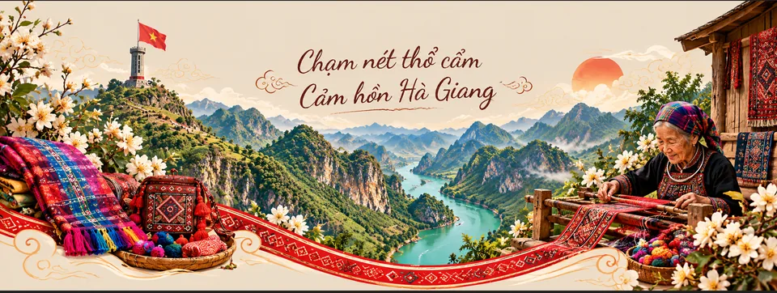
Tầm nhìnVision
CHẠM BẢN CẨM hướng tới trở thành thương hiệu quà tặng và trải nghiệm văn hóa Hà Giang. Đến năm 2031, doanh nghiệp định hướng phát triển các sản phẩm thổ cẩm ứng dụng, kết hợp trải nghiệm văn hóa và xây dựng quan hệ hợp tác lâu dài với các đơn vị sản xuất địa phương.
CHẠM BẢN CẨM aims to become a leading brand for Ha Giang cultural gifts and experiences. By 2031, the company seeks to develop practical brocade products combined with cultural experiences and establish long-term partnerships with local producers.
Sứ mệnhMission
Kết nối giá trị thổ cẩm và văn hóa Hà Giang với đời sống hiện đại thông qua các sản phẩm ứng dụng, nội dung văn hóa và trải nghiệm phù hợp; đồng thời tạo thêm đầu ra cho sản phẩm thủ công địa phương.
To connect Ha Giang's brocade heritage and cultural values with modern lifestyles through functional products, cultural storytelling, and meaningful experiences, while creating more market opportunities for local handicrafts.
Giá trị cốt lõiCore Values
CHẠM BẢN CẨM định hướng hoạt động dựa trên bốn giá trị:
CHẠM BẢN CẨM operates based on four core values:
Bản sắcCultural IdentityTôn trọng và lan tỏa giá trị văn hóa địa phương.Respecting and promoting local cultural heritage.
Chất lượngQualityĐảm bảo chất lượng và tính ứng dụng của sản phẩm.Ensuring product quality and practicality.
Sáng tạoCreativityĐổi mới trong thiết kế và cách truyền tải văn hóa.Innovating in product design and cultural storytelling.
Cộng đồngCommunityGắn kết và hợp tác với nghệ nhân, hộ gia đình và đơn vị sản xuất địa phương.Building connections and partnerships with local artisans, households, and producers.
Lùng Tám và Hợp tác xã dệt lanhLùng Tám and the Linen Weaving Cooperative
Lùng Tám, thuộc Quản Bạ, Hà Giang trước đây, là nơi cộng đồng người Mông gìn giữ nghề trồng lanh và dệt vải truyền thống. Cây lanh không chỉ là nguồn nguyên liệu sản xuất mà còn gắn với trang phục, phong tục và đời sống văn hóa của người Mông.
Lùng Tám, located in Quản Bạ, in the former Hà Giang Province, is home to the Hmong community, which has preserved the traditional craft of flax cultivation and linen weaving. Flax is not only a raw material but also an important part of Hmong clothing, customs, and cultural life.
2001
Năm 2001, Hợp tác xã dệt lanh Lùng Tám được thành lập nhằm tập hợp người làm nghề, duy trì kỹ thuật thủ công, tạo sinh kế và mở rộng thị trường tiêu thụ sản phẩm.
In 2001, the Lùng Tám Linen Weaving Cooperative was established to bring local artisans together, preserve traditional techniques, create livelihoods, and expand markets for their products.
Từ chất liệu lanh, người dân phát triển nhiều sản phẩm như vải, áo, váy, khăn, túi xách, ví và đồ trang trí. Điều này cho thấy chất liệu truyền thống có khả năng ứng dụng trong cả đời sống hiện đại.
Using flax fabric, local artisans create a variety of products, including textiles, clothing, scarves, handbags, wallets, and decorative items. This demonstrates the potential of traditional materials to be adapted for modern lifestyles.
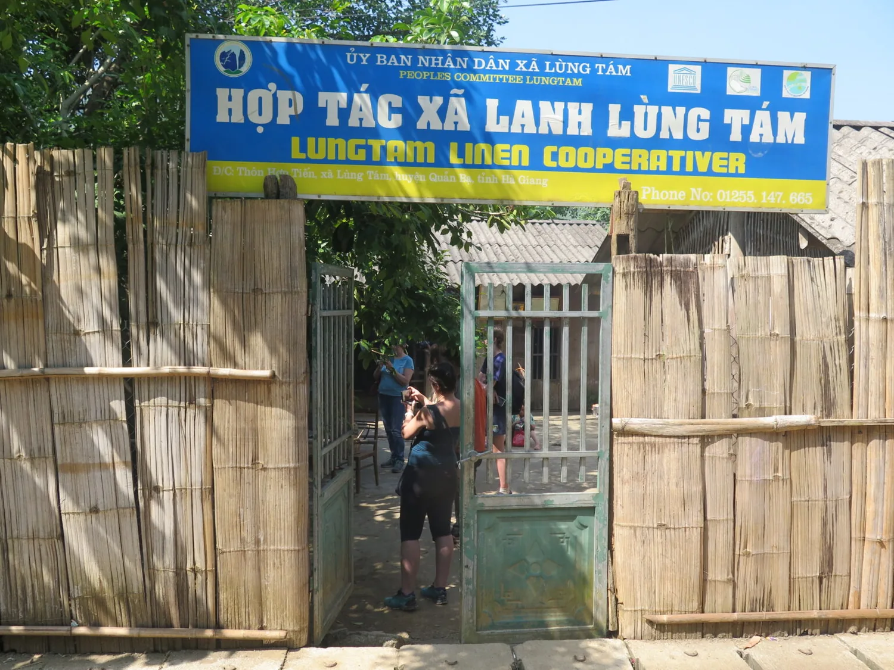
02
Người góp phần gìn giữ và phát triển nghề dệt lanhKey Figure in Preserving and Developing Linen Weaving
Bà Vàng Thị Mai – Giám đốc HTX dệt lanh Lùng Tám – là một trong những người gắn bó với hoạt động duy trì và phát triển nghề dệt lanh truyền thống.
Ms. Vàng Thị Mai, Director of the Lùng Tám Linen Weaving Cooperative, has played an important role in preserving and developing the traditional craft.
Bà góp phần tổ chức sản xuất, tập hợp người làm nghề và thúc đẩy tiêu thụ sản phẩm. Theo thông tin được công bố năm 2023, HTX có khoảng 130 xã viên và 9 tổ sản xuất, với các thành viên là người Mông.
She contributes to organizing production, bringing artisans together, and promoting product sales. According to information published in 2023, the cooperative had approximately 130 members and 9 production groups, primarily consisting of Hmong people.
Câu chuyện của bà và HTX cho thấy bảo tồn nghề truyền thống không chỉ là duy trì kỹ thuật mà còn cần tạo đầu ra và cơ hội thu nhập ổn định cho người làm nghề.
Her story highlights that preserving traditional crafts requires not only maintaining techniques but also creating market opportunities and stable incomes for local artisans.
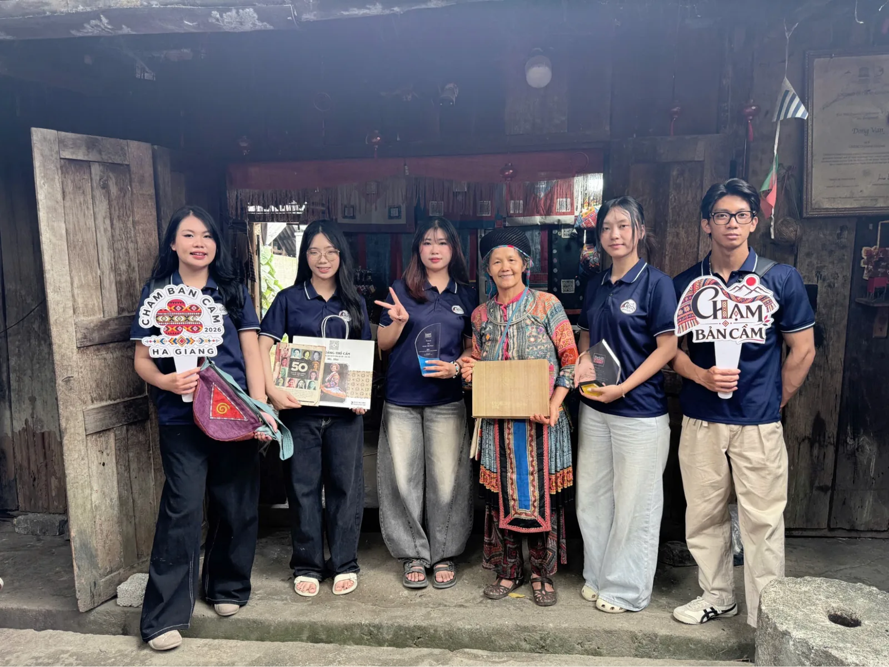
03
Quy trình tạo ra thổ cẩmHow Brocade Is Made
Quy trình làm vải lanh truyền thống tại Lùng Tám đòi hỏi nhiều thời gian, kinh nghiệm và sự tỉ mỉ. Theo tư liệu về Hợp tác xã dệt lanh Lùng Tám, để tạo ra một sản phẩm lanh hoàn chỉnh, người thợ phải trải qua khoảng 41 công đoạn thủ công, từ trồng cây, thu hoạch, tách sợi đến dệt vải và hoàn thiện. Các bước dưới đây là cách khái quát qua 9 công đoạn chính.
The traditional linen-making process in Lùng Tám requires considerable time, experience, and meticulous craftsmanship. According to materials about the Lùng Tám Linen Weaving Cooperative, producing finished linen fabric involves approximately 41 manual stages, from growing and harvesting flax to extracting fibers, weaving, and finishing the fabric. The following 9 steps provide an overview of the main stages of the process.
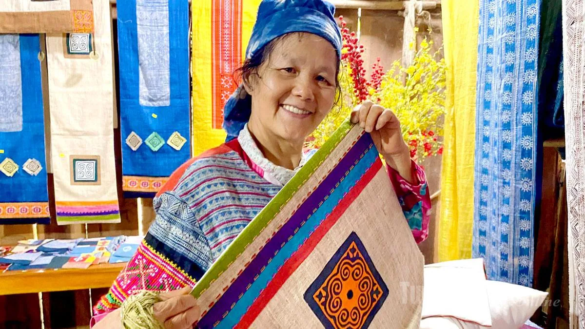
41 công đoạn41 stages
01 / 09
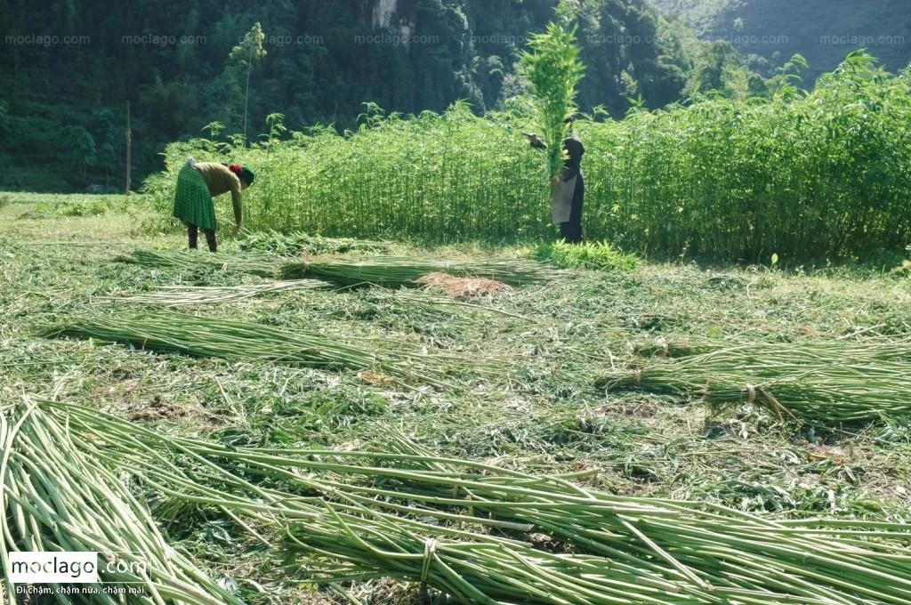
Bước 1. Trồng và thu hoạch cây lanhStep 1. Growing and Harvesting Flax
Cây lanh là nguyên liệu chính để tạo ra sợi vải. Người dân trồng và chăm sóc cây cho đến khi đạt thời điểm thu hoạch phù hợp. Thời gian thu hoạch ảnh hưởng đến chất lượng sợi: nếu thu hoạch quá sớm, sợi có thể dai; nếu để quá muộn, việc tách vỏ sẽ khó khăn hơn.
Sau khi thu hoạch, cây lanh được xử lý để chuẩn bị lấy sợi. Đây là bước đầu tiên quyết định chất lượng nguyên liệu cho các công đoạn tiếp theo.
Flax is the primary raw material used to produce linen fibers. Local farmers grow and care for the plants until they reach the appropriate stage for harvesting. Harvest timing affects fiber quality: harvesting too early may result in overly tough fibers, while harvesting too late can make the outer bark more difficult to separate.
After harvesting, the flax plants are processed to prepare them for fiber extraction. This initial step plays an important role in determining the quality of the raw material for subsequent stages.
02 / 09
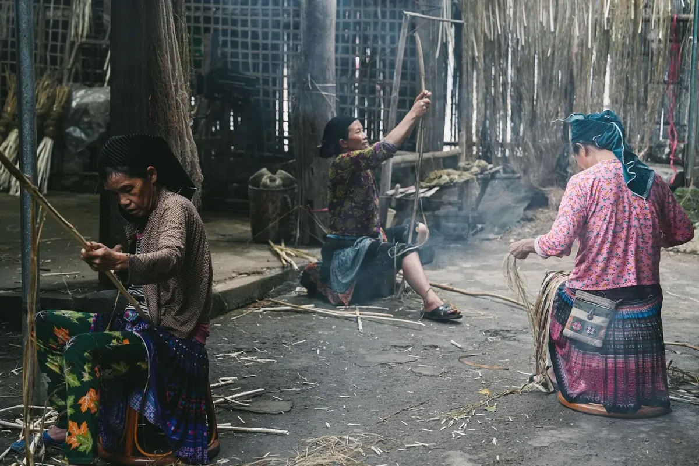
Bước 2. Tách vỏ và lấy sợi lanhStep 2. Stripping the Bark and Extracting Flax Fibers
Vỏ cây lanh được bóc tách cẩn thận để lấy phần sợi dùng làm nguyên liệu dệt. Công đoạn này yêu cầu người thợ có kinh nghiệm nhằm giữ sợi tương đối đều, hạn chế đứt gãy và tránh làm hỏng nguyên liệu.
Theo tư liệu về nghề dệt tại Lùng Tám, việc tách vỏ thường được thực hiện ở nơi tránh nắng và gió trực tiếp để hạn chế tình trạng vỏ lanh dính chặt vào thân cây, gây khó khăn khi xử lý.
The outer bark of the flax plant is carefully stripped away to obtain the fibers used for weaving. This stage requires experience and skill to keep the fibers relatively uniform, minimize breakage, and prevent damage to the raw material.
According to accounts of the weaving craft in Lùng Tám, the bark is usually stripped in a place sheltered from direct sunlight and wind. This helps prevent the bark from adhering tightly to the stalk, which would make processing more difficult.
03 / 09
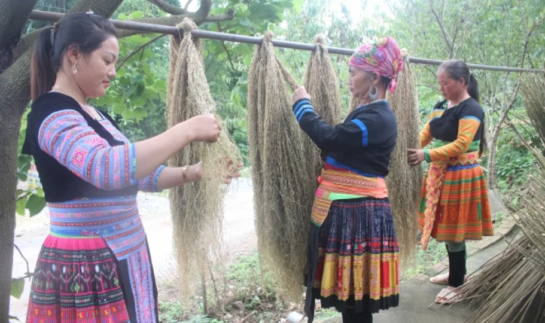
Bước 3. Giã, nối và se sợiStep 3. Pounding, Joining, and Spinning the Fibers
Sau khi tách, sợi lanh được giã để trở nên mềm hơn. Người thợ tiếp tục nối từng đoạn sợi với nhau, chú ý nối đều để tạo thành những sợi dài, có độ dày tương đối đồng nhất.
Một kỹ thuật đáng chú ý của người Mông ở Lùng Tám là sử dụng dụng cụ se sợi phối hợp giữa tay và chân, giúp se nhiều sợi cùng lúc. Công đoạn này đòi hỏi sự phối hợp nhịp nhàng và kinh nghiệm, bởi chất lượng sợi ảnh hưởng trực tiếp đến độ bền và tính thẩm mỹ của tấm vải.
After extraction, the flax fibers are pounded to make them softer. Artisans then join individual fiber strands together, carefully connecting them to produce long, relatively uniform threads.
A notable technique practiced by the Hmong people in Lùng Tám involves using a spinning tool operated with coordinated hand and foot movements, allowing several strands to be spun simultaneously. This stage requires rhythmic coordination and experience, as thread quality directly affects the durability and appearance of the finished fabric.
04 / 09
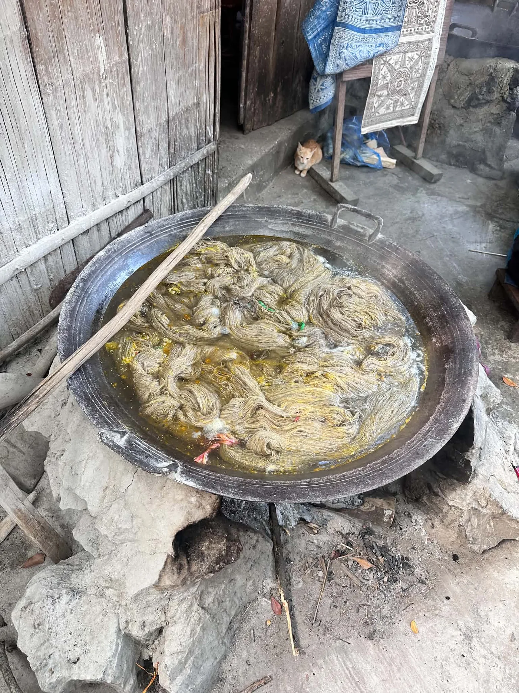
Bước 4. Luộc, giặt và làm trắng sợiStep 4. Boiling, Washing, and Whitening the Fibers
Sợi sau khi nối được cuộn lại, xử lý bằng cách luộc với tro bếp, ngâm và giặt nhiều lần. Quá trình này được lặp lại cho đến khi sợi đạt độ trắng phù hợp, sau đó đem phơi khô.
Đây là công đoạn quan trọng nhằm làm sạch và chuẩn bị sợi trước khi dệt. Người thợ cần kiểm soát chất lượng sợi để hạn chế tình trạng không đều màu hoặc đứt gãy khi đưa lên khung cửi.
After joining, the flax fibers are wound into bundles, boiled with wood ash, soaked, and washed repeatedly. This process is repeated until the fibers reach the desired level of whiteness, after which they are dried.
This is an important stage for cleaning and preparing the fibers before weaving. Artisans must carefully monitor fiber quality to minimize uneven coloring and breakage when the threads are placed on the loom.
05 / 09
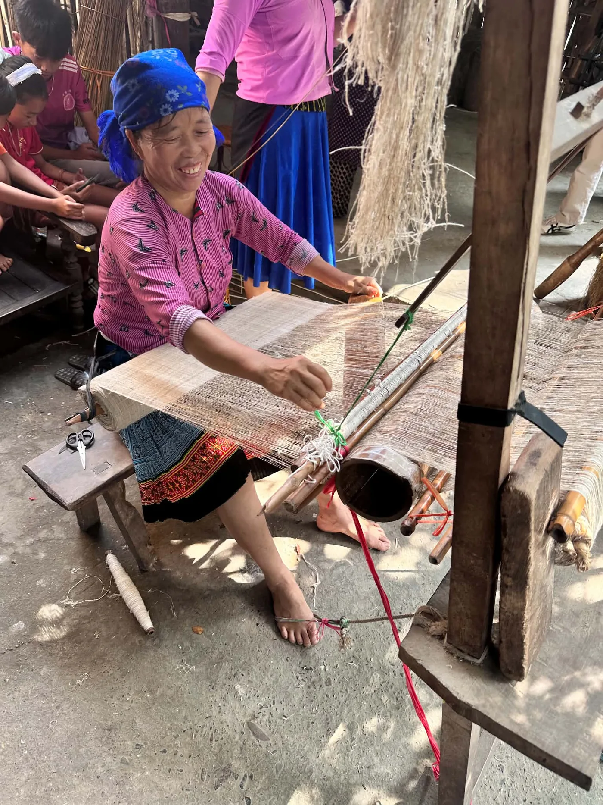
Bước 5. Mắc khung và dệt vảiStep 5. Setting Up the Loom and Weaving the Fabric
Khi sợi đã được xử lý, người thợ tiến hành mắc sợi lên khung dệt. Tùy theo khổ vải, số lượng sợi cần được tính toán và sắp xếp chính xác để tạo nên mặt vải đồng đều.
Vải được dệt thủ công bằng khung cửi. Trong quá trình này, người thợ phải phối hợp các thao tác để đưa sợi ngang qua hệ thống sợi dọc, đồng thời xử lý những đoạn sợi bị đứt hoặc không đạt yêu cầu. Kinh nghiệm của nghệ nhân đóng vai trò quan trọng trong việc tạo ra tấm vải chắc, đều và đẹp.
Once the fibers have been processed, artisans arrange and set the threads on the loom. Depending on the desired fabric width, the number of threads must be carefully calculated and aligned to produce an even surface.
The fabric is woven by hand using a traditional loom. During this process, artisans coordinate their movements to pass the weft threads through the warp threads while repairing any broken or unsuitable strands. The artisans’ experience plays an important role in producing fabric that is strong, uniform, and visually appealing.
06 / 09
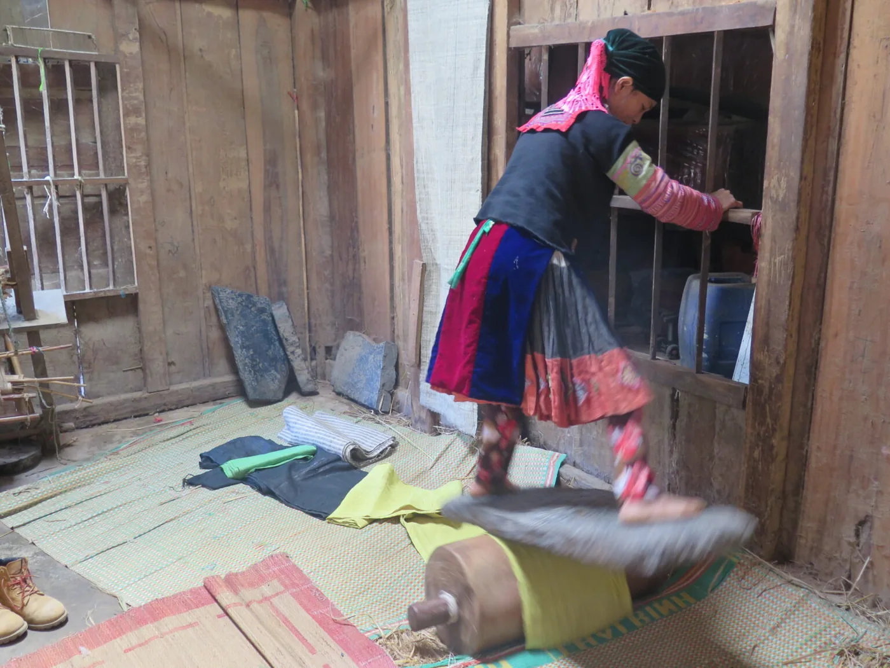
Bước 6. Cán, làm mềm và hoàn thiện mặt vảiStep 6. Rolling, Softening, and Finishing the Fabric
Sau khi dệt, vải tiếp tục được giặt và xử lý để cải thiện bề mặt. Một kỹ thuật truyền thống được ghi nhận tại Lùng Tám là đặt vải giữa phiến đá và trụ gỗ, sau đó lăn đá nhiều lần để cán phẳng, làm vải mềm và mịn hơn.
Trong một số mô tả về nghề, vải còn được ngâm với nước tro bếp rồi phơi khô để làm trắng. Các thao tác xử lý này cần sự kiên trì, giúp tấm vải đạt trạng thái phù hợp trước khi nhuộm màu hoặc trang trí.
After weaving, the fabric is washed and treated to improve its surface. One traditional technique documented in Lùng Tám involves placing the fabric between a stone slab and a wooden post, then rolling the stone over it repeatedly to flatten the fabric and make it softer and smoother.
In some accounts of the craft, the fabric is also soaked in wood-ash water and dried in the sun to whiten it. These treatments require patience and help prepare the fabric for dyeing or decoration.
07 / 09
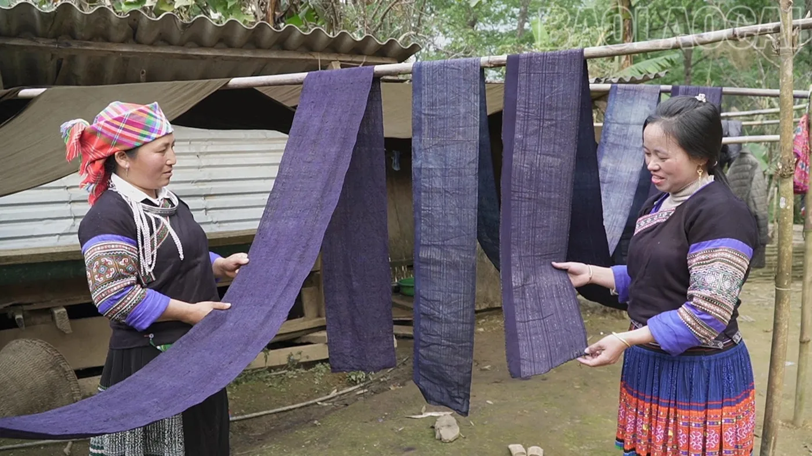
Bước 7. Nhuộm chàm và tạo màuStep 7. Indigo Dyeing and Coloration
Nhuộm chàm là một kỹ thuật truyền thống được sử dụng để tạo màu cho vải lanh. Vải được ngâm trong dung dịch chàm rồi đem phơi; quá trình ngâm và phơi có thể được lặp lại nhiều lần để đạt sắc độ mong muốn.
Công đoạn nhuộm đòi hỏi sự kiên nhẫn và phụ thuộc vào điều kiện thời tiết, thời gian phơi cũng như kinh nghiệm của người thợ. Vì vậy, màu sắc của vải là kết quả của quá trình xử lý nhiều lần chứ không đơn thuần được tạo ra trong một lần nhuộm.
Indigo dyeing is a traditional technique used to color linen fabric. The fabric is immersed in an indigo dye bath and then dried. This dipping and drying process may be repeated several times to achieve the desired shade.
Dyeing requires patience and depends on weather conditions, drying time, and the artisan’s experience. Therefore, the fabric’s final color results from repeated treatments rather than a single dyeing session.
08 / 09
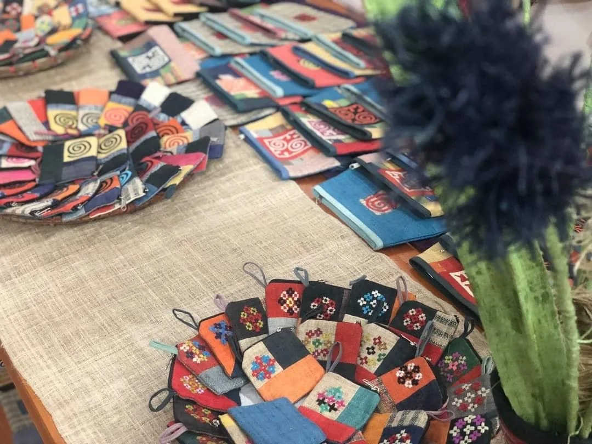
Bước 8. Thêu và trang trí hoa vănStep 8. Embroidery and Decorative Patterns
Nghệ nhân sử dụng kỹ thuật thêu tay và ghép các mảng vải màu để trang trí sản phẩm. Những họa tiết hình học, đường nét đối xứng và các hình thức trang trí truyền thống tạo nên diện mạo riêng cho vải lanh Lùng Tám.
Đây là công đoạn đòi hỏi sự tập trung cao độ, bởi nét vẽ cần đều và bố cục hoa văn cần được tính toán cẩn thận.
Artisans use hand-embroidery techniques and patchwork to decorate their products with colored fabric pieces. Geometric motifs, symmetrical lines, and traditional decorative patterns give Lùng Tám linen its distinctive appearance.
This stage requires a high level of concentration, as the stitches must be even and the arrangement of patterns must be carefully planned.
09 / 09
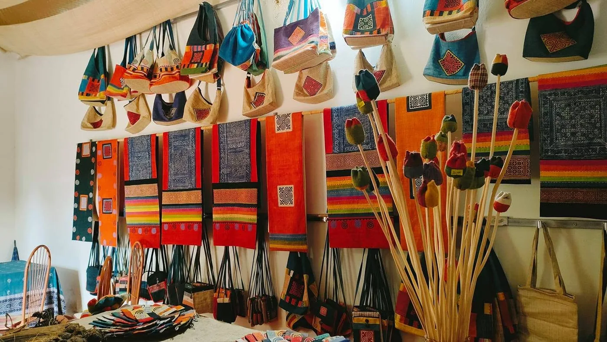
Bước 9. May và phát triển thành phẩmStep 9. Sewing and Developing Finished Products
Sau khi hoàn thiện, vải lanh có thể được sử dụng để may trang phục thổ cẩm hoặc phát triển thành nhiều sản phẩm thổ cẩm khác nhau như túi, ví, khăn, vỏ gối, khăn trải bàn và đồ trang trí. Tùy mục đích sử dụng, người làm nghề lựa chọn cách cắt, may, phối màu và trang trí phù hợp.
Sự phát triển về mẫu mã giúp sản phẩm lanh truyền thống có thêm ứng dụng trong đời sống hiện đại, đồng thời tạo cơ hội mở rộng thị trường cho người sản xuất.
Once the linen fabric is complete, it can be used to make traditional brocade clothing or a variety of other products, including bags, wallets, scarves, pillowcases, tablecloths, and decorative items. Depending on the intended use, artisans select suitable cutting, sewing, color-coordination, and decoration techniques.
The development of new designs allows traditional linen products to serve a wider range of purposes in modern life while creating opportunities for local producers to expand their markets.
Mỗi kỹ thuật tạo ra một hiệu quả riêng. Thêu và ghép vải giúp bề mặt sản phẩm có thêm chiều sâu và sự phong phú về màu sắc.
Each technique creates a distinctive effect. Embroidery and patchwork add depth to the surface of the products and enrich their color combinations.
Khi giới thiệu hoa văn truyền thống, cần tránh gán ý nghĩa biểu tượng cụ thể cho từng họa tiết nếu chưa có tư liệu xác thực hoặc lời giải thích từ nghệ nhân. Việc ghi nhận đúng nguồn gốc và cách sử dụng hoa văn cũng là một phần của quá trình tôn trọng và bảo tồn di sản văn hóa.
When presenting traditional patterns, specific symbolic meanings should not be attributed to individual motifs without verified sources or explanations from artisans. Accurately documenting the origins and uses of these patterns is also an important part of respecting and preserving cultural heritage.
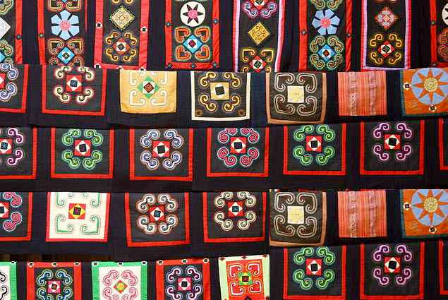
04
Giá trị thổ cẩm Lùng Tám với CHẠM BẢN CẨMConnecting the Cultural Value of Lùng Tám Brocade with CHẠM BẢN CẨM
Nghề dệt lanh Lùng Tám là một biểu hiện tiêu biểu của tri thức thủ công và bản sắc văn hóa người Mông tại khu vực Hà Giang trước đây. Từ cây lanh đến những sản phẩm thổ cẩm hoàn chỉnh, quá trình chế tác trải qua nhiều công đoạn đòi hỏi sự kiên trì, khéo léo và kinh nghiệm được truyền nối qua nhiều thế hệ.
Lùng Tám linen weaving is a distinctive expression of traditional craftsmanship and Hmong cultural identity in the former Ha Giang region. From flax plants to finished brocade products, the crafting process involves numerous stages that require patience, skill, and experience passed down through generations.
Trong bối cảnh hiện đại, phát triển sản phẩm từ vải lanh cần song hành với việc gìn giữ kỹ thuật truyền thống, hỗ trợ người làm nghề và giới thiệu chính xác câu chuyện văn hóa. Khi được thực hiện có trách nhiệm, mỗi sản phẩm thủ công có thể vừa đáp ứng nhu cầu sử dụng, vừa góp phần duy trì sinh kế và đưa những giá trị văn hóa của Lùng Tám đến gần hơn với công chúng.
In the modern context, developing products from linen fabric should go hand in hand with preserving traditional techniques, supporting artisans, and accurately communicating cultural stories. When carried out responsibly, each handcrafted product can meet practical needs while helping sustain local livelihoods and bringing the cultural heritage of Lùng Tám closer to a wider audience.
Đối với CHẠM BẢN CẨM, tìm hiểu nghề dệt lanh Lùng Tám là cơ sở để phát triển các sản phẩm quà tặng gắn với câu chuyện văn hóa. Giá trị của sản phẩm không chỉ nằm ở chất liệu hay hoa văn mà còn ở thông tin về nguồn gốc, người làm nghề và quá trình tạo ra thành phẩm.
For CHẠM BẢN CẨM, learning about Lùng Tám linen weaving provides a foundation for developing gift products connected to cultural stories. A product’s value lies not only in its material or patterns but also in the information it conveys about its origins, the artisans who make it, and the process behind its creation.
Một sản phẩm quà tặng có thể kết hợp sản phẩm thủ công với thẻ câu chuyện, bản đồ hoặc hộ chiếu trải nghiệm và mã QR dẫn đến nội dung giới thiệu làng nghề. Cách làm này giúp khách hàng hiểu thêm về quy trình chế tác, đồng thời tạo sự kết nối giữa món quà và văn hóa địa phương.
A gift product can combine a handcrafted item with a story card, an experience map or passport, and a QR code linking to content about the traditional craft village. This approach helps customers learn more about the production process while creating a meaningful connection between the gift and local culture.
05
Ý nghĩa hoa văn thổ cẩmThe Meaning of Brocade Patterns
Hoa vănPatterns
Bạn có thực sự hiểu những hoa văn thổ cẩm?Do you really understand the meaning behind brocade patterns?
Bạn đã bao giờ tự hỏi vì sao trên những bộ trang phục truyền thống lại xuất hiện các hình xoắn ốc, tam giác, hoa lá hay những hình khối rực rỡ sắc màu?
Have you ever wondered why traditional costumes feature spirals, triangles, flowers, leaves, and colorful geometric shapes?
Đằng sau vẻ đẹp ấy không chỉ là nghệ thuật trang trí, mà còn là những câu chuyện về thiên nhiên, cuộc sống, tình cảm và bản sắc văn hoá của đồng bào các dân tộc Hà Giang.
Behind their beauty lies more than decorative art. These patterns tell stories about nature, everyday life, emotions, and the cultural identity of the ethnic communities in Ha Giang.
Hoa văn thổ cẩm — khi hoạ tiết trở thành ngôn ngữ văn hoá.Brocade patterns — when motifs become a cultural language.
Hoa văn thổ cẩm là một trong những yếu tố tạo nên vẻ đẹp riêng của trang phục truyền thống các dân tộc vùng cao.
Brocade patterns are among the most distinctive features of traditional clothing worn by ethnic communities in Vietnam's northern highlands.
Mỗi đường nét, hình khối và cách phối màu đều thể hiện óc sáng tạo, quan niệm thẩm mỹ và những giá trị văn hoá được lưu truyền qua nhiều thế hệ.
Every line, shape, and color combination reflects creativity, aesthetic values, and cultural traditions passed down through generations.
Đối với người Mông, hoa văn có thể gắn với những hình ảnh quen thuộc trong thiên nhiên, đời sống và ước vọng về sự sung túc, hạnh phúc.
For the Hmong people, brocade patterns often draw inspiration from familiar elements of nature, daily life, and aspirations for prosperity and happiness.
Trong khi đó, nghệ thuật trang trí của người Lô Lô lại nổi bật với sự kết hợp những hình tam giác, hình vuông và các mảng màu rực rỡ, tạo nên những bố cục độc đáo.
Meanwhile, the decorative art of the Lo Lo people stands out for its combinations of triangles, squares, and vibrant color blocks, creating unique and visually striking compositions.
Chính sự khác biệt ấy góp phần làm nên bức tranh văn hoá phong phú của Hà Giang.
Together, these differences contribute to the rich cultural diversity of Ha Giang.
Bốn họ họa tiếtFour pattern families
Khám phá những họa tiết mang dấu ấn vùng cao.Exploring the traditional patterns of the highlands.
Hoa văn xoắn ốcSpiral patterns
Những đường nét đầy câu chuyệnCurves that tell stories
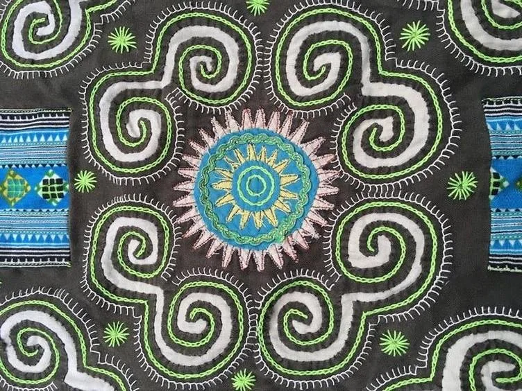
Những đường cong mềm mại, cuộn tròn tạo nên vẻ đẹp đặc trưng trên trang phục của người Mông.
Soft, swirling curves create a distinctive beauty in traditional Hmong clothing.
Trong một số mô-típ truyền thống, hình tượng ốc sên còn được dùng để kể những câu chuyện về tình cảm, sự gắn bó và những khát vọng trong cuộc sống.
In certain traditional motifs, the image of a snail is used to express stories of affection, connection, and hopes for a fulfilling life.
Hoa văn hình họcGeometric patterns
Vẻ đẹp của sự cân đốiThe beauty of balance and harmony
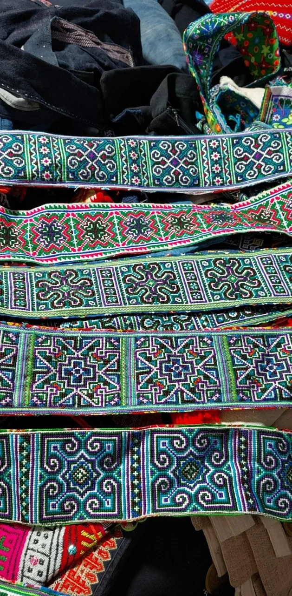
Hình vuông, tam giác, hình thoi và những đường zích zắc mang đến nhịp điệu sinh động cho trang phục. Các họa tiết được sắp xếp lặp lại hoặc đối xứng, tạo nên vẻ đẹp hài hoà.
Squares, triangles, diamonds, and zigzag lines bring rhythm and movement to traditional costumes. These motifs are often arranged in repeating or symmetrical compositions, creating a harmonious appearance.
Trên trang phục người Lô Lô, những hình tam giác nhỏ có thể kết hợp thành hình vuông, hình hoa hoặc những mảng trang trí lớn.
On traditional Lo Lo clothing, small triangles can be combined to form squares, floral shapes, or larger decorative patterns.
Hoa văn hoa láFloral and botanical patterns
Dấu ấn của thiên nhiênInspired by nature
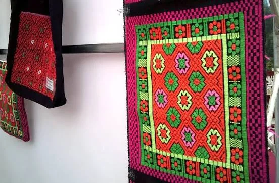
Thiên nhiên vùng cao trở thành nguồn cảm hứng cho nhiều họa tiết trang trí.
The natural beauty of the highlands serves as inspiration for many traditional decorative motifs.
Hình ảnh hoa đào, hoa lê, hoa tam giác mạch và những loài thực vật được cách điệu, gợi lên sự gần gũi giữa con người với môi trường sống.
Images of peach blossoms, pear blossoms, buckwheat flowers, and other plants are stylized into intricate patterns, reflecting the close relationship between people and their natural surroundings.
Hoa văn động vậtAnimal patterns
Hình tượng mang ý nghĩa văn hoáSymbols of cultural significance
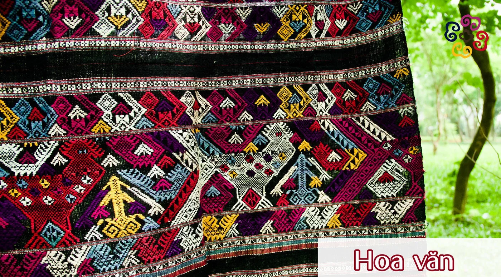
Bên cạnh hình học và hoa lá, hình tượng động vật cũng xuất hiện trong nghệ thuật trang trí — tiêu biểu là hoa văn con chim.
Alongside geometric and floral designs, animal motifs also appear in traditional decorative art — most notably bird patterns.
Trên trang phục người Lô Lô, hình chim được ghi nhận là biểu tượng gắn với sức mạnh, tự do và hoà bình.
On Lo Lo clothing, bird imagery has been recognized as a symbol associated with strength, freedom, and peace.
Sắc màu thổ cẩmThe colours of brocade
Bức tranh sống động của văn hoá Hà Giang.A vibrant expression of Ha Giang's culture.
Không chỉ thu hút bởi họa tiết, thổ cẩm còn gây ấn tượng với cách kết hợp màu sắc. Đỏ, vàng, xanh, tím và những gam màu tương phản được dùng để làm nổi bật hoa văn, tạo nên vẻ đẹp rực rỡ.
Beyond their intricate patterns, brocade textiles are also remarkable for their striking color combinations. Red, yellow, blue, purple, and other contrasting shades are used to highlight decorative motifs, creating vibrant and lively designs.
ĐỏRedVàngYellowXanhGreenTímPurpleChàmIndigo
Trên trang phục người Mông, màu sắc còn gắn với những ước vọng tốt đẹp về cuộc sống ấm no, may mắn và hạnh phúc.In traditional Hmong clothing, colors may also be associated with hopes for prosperity, good fortune, and happiness.
Với người Lô Lô, các mảng màu được sắp xếp khéo léo cùng hệ thống hoa văn hình học, tạo nên phong cách trang trí rất dễ nhận diện.For the Lo Lo people, carefully arranged color blocks and geometric patterns create a distinctive decorative style that is easily recognizable.
Mỗi cộng đồng có cách sử dụng màu sắc riêng, góp phần thể hiện bản sắc văn hoá của mình.Each ethnic community has its own approach to color, contributing to the diverse cultural identities found throughout Ha Giang.
Vì sao cần gìn giữWhy preserve them
Gìn giữ hoa văn là gìn giữ con người đứng sau nó.To preserve a pattern is to honour the people behind it.
Hoa văn thổ cẩm không chỉ có giá trị thẩm mỹ mà còn chứa đựng tri thức, ký ức và những dấu ấn văn hoá được tích luỹ qua nhiều thế hệ.Brocade patterns hold more than aesthetic value. They also preserve knowledge, memories, and cultural heritage accumulated over generations.
Mỗi họa tiết có thể phản ánh một phần đời sống cộng đồng, từ cảm hứng thiên nhiên, tín ngưỡng cho đến quan niệm về cái đẹp.Each motif may reflect an aspect of community life, from inspiration drawn from nature and traditional beliefs to cultural perceptions of beauty.
Khi những hoa văn truyền thống được tìm hiểu, giới thiệu và ứng dụng phù hợp trong đời sống hiện đại, các giá trị văn hoá có thêm cơ hội tiếp cận thế hệ trẻ.When traditional patterns are studied, introduced, and thoughtfully incorporated into modern life, cultural heritage gains new opportunities to connect with younger generations.
Mỗi hoa văn là một dấu ấn. Mỗi đường nét là một câu chuyện văn hoá.Every pattern leaves a mark. Every line tells a cultural story.
Quý khách muốn đặt hàng hoặc có bất kỳ thắc mắc nào liên quan đến sản phẩm, xin vui lòng liên hệ với Chúng tôi qua email hoặc liên hệ dưới đây: Chambancam@gmail.comTo place an order or ask anything about our products, please contact us by email or through the details below: chambancam@gmail.com
Phần 04Part 04
Hộp quà trải nghiệmExperience gift box
[ Chủ dự án điền: prototype · thành phần · giá bán ][ Owner to fill in: prototype · components · price ]
Phần 05 · Trải nghiệm văn hóaPart 05 · Cultural experience
Văn hóa đặc sắc ở Hà Giang — nét đẹp từ các dân tộc thiểu số.Unique cultural heritage of Ha Giang — the beauty of ethnic minority cultures.
Hà Giang, thuộc vùng cực Bắc Việt Nam theo địa giới trước đợt sắp xếp hành chính năm 2025, nổi tiếng với cảnh quan thiên nhiên hùng vĩ, những dãy núi đá tai mèo trùng điệp, ruộng bậc thang và những cung đường đèo quanh co. Tuy nhiên, sức hấp dẫn của vùng đất này không chỉ đến từ cảnh quan tự nhiên mà còn bắt nguồn từ đời sống văn hóa phong phú của cộng đồng các dân tộc cùng sinh sống qua nhiều thế hệ.
Ha Giang, located in the northernmost region of Vietnam under the administrative boundaries prior to the 2025 administrative reorganization, is renowned for its majestic natural landscapes, including towering limestone mountains, terraced rice fields, and winding mountain passes. However, the region's appeal lies not only in its natural beauty but also in the rich cultural life of the ethnic communities that have lived together for generations.
Mỗi dân tộc có ngôn ngữ, phong tục, tín ngưỡng, trang phục, kiến trúc và tri thức dân gian riêng. Những giá trị đó được thể hiện trong các lễ hội đầu năm, nghi lễ vòng đời, chợ phiên vùng cao, nghệ thuật dân gian, nghề dệt lanh, thêu thùa, làm trang sức và chế biến các món ăn truyền thống. Qua thời gian, các yếu tố văn hóa vừa được gìn giữ trong đời sống cộng đồng, vừa góp phần hình thành bản sắc riêng của vùng đất Hà Giang.
Each ethnic group has its own language, customs, beliefs, traditional clothing, architecture, and folk knowledge. These cultural values are reflected in early-year festivals, life-cycle rituals, highland markets, folk arts, linen weaving, embroidery, jewelry making, and traditional cuisine. Over time, these cultural elements have been preserved within local communities while contributing to the distinctive identity of Ha Giang.
Trong số các cộng đồng dân tộc tại đây, người Mông, Dao, Lô Lô, Tày và Nùng là những nhóm tiêu biểu có nhiều nét văn hóa đặc sắc. Việc tìm hiểu những giá trị này không chỉ giúp hiểu rõ hơn về đời sống người dân địa phương mà còn cho thấy tiềm năng phát triển du lịch văn hóa gắn với bảo tồn di sản và tạo sinh kế bền vững cho cộng đồng.
Among the ethnic communities in the region, the Hmong, Dao, Lo Lo, Tay, and Nung are notable for their distinctive cultural traditions. Exploring these cultural values not only provides a deeper understanding of local people's lives but also highlights the potential for developing cultural tourism that supports heritage preservation and creates sustainable livelihoods for local communities.
01
Hà Giang – Miền đất đa dạng văn hóaHa Giang – A Land of Cultural Diversity
Hà Giang có địa hình núi cao, thung lũng và cao nguyên đá ảnh hưởng sâu sắc đến phương thức cư trú, sản xuất và sinh hoạt của người dân. Nếu nhiều cộng đồng ở vùng núi đá phát triển cách canh tác phù hợp với điều kiện đất dốc, thì người dân tại các thung lũng thuận lợi hơn có thể gắn bó với ruộng nước và nhà sàn.
Ha Giang’s mountainous terrain, valleys, and rocky plateaus have profoundly shaped local settlement patterns, livelihoods, and daily life. While communities in rocky mountainous areas have developed farming methods suited to steep slopes, those living in more fertile valleys have been able to cultivate wet rice and build traditional stilt houses.
Hà Giang trước đây là nơi sinh sống của nhiều dân tộc như Mông, Dao, Lô Lô, Tày, Nùng, Pà Thẻn, Pu Péo và Giáy. Sự đa dạng thể hiện qua trang phục truyền thống, nghi lễ, lễ hội, chợ phiên, nghệ thuật dân gian và các nghề thủ công như dệt lanh, thêu thùa, nhuộm chàm, làm trang sức.
Ha Giang was home to many ethnic groups, including the Hmong, Dao, Lo Lo, Tay, Nung, Pa Then, Pu Peo, and Giay. This cultural diversity is reflected in traditional clothing, rituals, festivals, highland markets, folk arts, and handicrafts such as linen weaving, embroidery, indigo dyeing, and jewelry making.
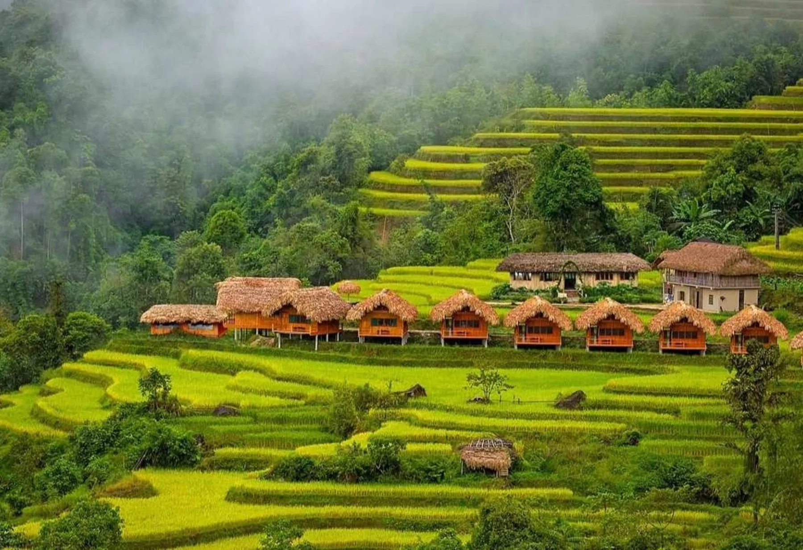
02
Nét văn hóa tiêu biểu của các dân tộcDistinctive Cultural Features of Ethnic Groups
Chạm vào một người để xem phần của cộng đồng đó.Tap a person to read about that community.
MôngHmong
Người Mông – Sức sống từ núi caoThe Hmong People – A Vibrant Culture of the Highlands
Văn hóa người Mông được thể hiện qua tiếng khèn, dân ca, múa dân gian, lễ hội Gầu Tào và các phiên chợ vùng cao. Lễ hội Gầu Tào thường gắn với mong ước về sức khỏe, bình an, gia đình hạnh phúc và mùa màng thuận lợi.
Hmong culture is expressed through the khen (a traditional bamboo mouth organ), folk songs, traditional dances, the Gau Tao Festival, and highland markets. The Gau Tao Festival is often associated with wishes for good health, peace, family happiness, and bountiful harvests.
Trang phục người Mông có sự khác biệt giữa các nhóm địa phương, nổi bật với váy xếp ly, hoa văn thêu, kỹ thuật in sáp ong và cách phối hợp màu sắc.
Hmong traditional clothing varies among local groups and is distinguished by pleated skirts, embroidered patterns, beeswax-resist designs, and vibrant color combinations.
Đặc biệt, nghề dệt lanh truyền thống của người Mông ở Lùng Tám là một nét văn hóa tiêu biểu. Quy trình tạo vải bắt đầu từ trồng, thu hoạch cây lanh, xử lý và nối sợi, se sợi, mắc khung đến dệt vải. Theo các tư liệu giới thiệu nghề, quy trình này thường được ghi nhận gồm 41 công đoạn thủ công.
In particular, traditional linen weaving among the Hmong people in Lùng Tám is a notable cultural heritage. The process begins with growing and harvesting flax, followed by fiber processing and joining, spinning, warping the loom, and weaving the fabric. According to materials introducing this traditional craft, the process typically involves 41 manual stages.
Sau khi dệt, vải có thể được trang trí bằng kỹ thuật vẽ sáp ong, nhuộm chàm, thêu hoặc ghép vải. Nghề dệt lanh không chỉ tạo ra nguyên liệu phục vụ đời sống mà còn lưu giữ tri thức bản địa, kỹ năng thủ công và tạo sinh kế cho người làm nghề.
After weaving, the fabric can be decorated using beeswax-resist painting, indigo dyeing, embroidery, or patchwork. Linen weaving not only produces materials for everyday use but also preserves indigenous knowledge and traditional craftsmanship while providing livelihoods for local artisans.
Bên cạnh đó, nhà trình tường, hàng rào đá và các món ăn như mèn mén, thắng cố cũng góp phần tạo nên hình ảnh đặc trưng của nhiều cộng đồng Mông ở vùng cao.
In addition, rammed-earth houses, stone fences, and traditional dishes such as mèn mén (steamed ground cornmeal) and thắng cố (a traditional highland stew) contribute to the distinctive cultural identity of many Hmong communities in the mountainous regions.
Dao
Người Dao – Bản sắc trong trang phục và nghi lễThe Dao People – Cultural Identity Through Traditional Clothing and Rituals
Người Dao gồm nhiều nhóm địa phương, chẳng hạn Dao Đỏ, Dao Tiền và Dao Quần Chẹt, với những khác biệt về trang phục, phong tục và nghi lễ.
The Dao people comprise several local groups, including the Red Dao, Coin Dao, and Dao Quan Chet, each with distinctive features in traditional clothing, customs, and rituals.
Một nghi lễ quan trọng ở nhiều nhóm Dao là Lễ cấp sắc, đánh dấu sự trưởng thành về mặt tín ngưỡng và trách nhiệm cộng đồng của nam giới theo quan niệm truyền thống. Tín ngưỡng thờ cúng tổ tiên cũng giữ vai trò quan trọng trong đời sống tinh thần.
An important ritual among many Dao groups is the Cap Sac (coming-of-age) ceremony, which marks men's spiritual maturity and their responsibilities within the community according to traditional beliefs. Ancestor worship also plays a significant role in the spiritual life of the Dao people.
Trang phục người Dao thường gây ấn tượng bởi nền vải chàm hoặc màu tối kết hợp với các dải thêu đỏ, trắng, vàng và họa tiết hình học. Kỹ thuật thêu đòi hỏi sự tỉ mỉ, khả năng phối màu và ghi nhớ hoa văn được truyền lại qua nhiều thế hệ.
Dao traditional clothing is distinguished by indigo or dark-colored fabrics adorned with red, white, and yellow embroidery and geometric patterns. The embroidery techniques require precision, a keen sense of color coordination, and the ability to memorize patterns passed down through generations.
Ngoài nghề thủ công, một số cộng đồng Dao còn lưu giữ tri thức dân gian về cây thuốc, canh tác và sử dụng nguyên liệu tự nhiên. Việc giới thiệu những giá trị này cần tôn trọng quyền chia sẻ của cộng đồng và ý nghĩa của các nghi lễ.
Beyond handicrafts, some Dao communities preserve traditional knowledge of medicinal plants, farming practices, and the use of natural materials. Introducing these cultural values should respect the community’s right to decide what knowledge to share and the significance of its rituals.
Lô LôLo Lo
Người Lô Lô – Nét đẹp của trang phục và tín ngưỡngThe Lo Lo People – The Beauty of Traditional Clothing and Beliefs
Người Lô Lô là một trong những dân tộc có dân số ít tại Việt Nam, với cộng đồng cư trú ở một số địa bàn miền núi phía Bắc, trong đó có khu vực Hà Giang trước đây.
The Lo Lo are one of Vietnam’s ethnic groups with a relatively small population. Their communities live in several mountainous areas of northern Vietnam, including the former Ha Giang region.
Văn hóa Lô Lô thể hiện qua tín ngưỡng thờ cúng tổ tiên, nghi lễ gia đình và sinh hoạt cộng đồng. Các nghi lễ góp phần duy trì mối liên hệ giữa các thế hệ, dòng họ và ký ức văn hóa.
Lo Lo culture is expressed through ancestor worship, family rituals, and community activities. These practices help maintain connections between generations, clans, and cultural memory.
Trang phục truyền thống, đặc biệt là trang phục nữ ở một số nhóm, nổi bật với kỹ thuật ghép nhiều mảnh vải nhỏ, phối hợp màu sắc và họa tiết hình học. Quá trình cắt, ghép, thêu và phối màu đòi hỏi sự khéo léo, đồng thời thể hiện cảm quan thẩm mỹ của cộng đồng.
Traditional clothing, particularly women’s attire in some Lo Lo groups, is distinguished by intricate patchwork, vibrant color combinations, and geometric patterns. Cutting, assembling, embroidering, and coordinating these fabrics require considerable skill and reflect the community’s aesthetic sensibilities.
Âm nhạc, trống, lời hát và các hoạt động lễ hội cũng góp phần duy trì bản sắc. Việc bảo tồn cần gắn với truyền dạy trong cộng đồng và khuyến khích thế hệ trẻ tiếp nối di sản.
Music, drums, folk songs, and festivals also play an important role in preserving Lo Lo cultural identity. Heritage conservation should be rooted in community-based knowledge transmission and encourage younger generations to carry these traditions forward.
TàyTay
Người Tày – Hòa quyện giữa thiên nhiên và văn hóaThe Tay People – A Harmony of Nature and Culture
Đời sống truyền thống của người Tày tại nhiều khu vực gắn với thung lũng, sản xuất nông nghiệp và không gian bản làng. Lễ hội Lồng Tồng, còn gọi là lễ hội xuống đồng, thường thể hiện mong ước về mùa màng thuận lợi và cuộc sống bình an.
Traditional Tay life in many areas is closely connected to valleys, agricultural production, and village communities. The Long Tong Festival, also known as the Going-to-the-Fields Festival, expresses hopes for favorable harvests and a peaceful life.
Nhà sàn là một hình thức kiến trúc nổi bật của nhiều cộng đồng Tày. Không chỉ là nơi ở, nhà sàn còn là không gian sinh hoạt gia đình, tiếp khách, tổ chức nghi lễ và truyền dạy phong tục.
The stilt house is a distinctive architectural feature of many Tay communities. Beyond serving as a home, it provides a space for family life, welcoming guests, performing rituals, and passing down traditional customs.
Một nét văn hóa tiêu biểu khác là hát Then cùng đàn tính. Loại hình nghệ thuật này kết hợp lời hát, nhạc cụ và nghi lễ, thể hiện đời sống tinh thần, quan niệm về thế giới và những mong ước của cộng đồng. Năm 2019, thực hành Then của người Tày, Nùng và Thái tại Việt Nam được UNESCO ghi danh vào Danh sách Di sản văn hóa phi vật thể đại diện của nhân loại.
Another distinctive cultural tradition is Then singing accompanied by the dan tinh, a traditional stringed musical instrument. This art form combines singing, instrumental music, and ritual practices, reflecting the spiritual life, worldview, and aspirations of the community. In 2019, the Practices of Then by the Tay, Nung and Thai ethnic groups in Vietnam were inscribed on UNESCO’s Representative List of the Intangible Cultural Heritage of Humanity.
Ẩm thực người Tày cũng gắn với nông sản địa phương và các dịp sum họp gia đình, lễ hội, cưới hỏi.
Tay cuisine is also closely linked to local agricultural produce and is an important part of family gatherings, festivals, and wedding celebrations.
NùngNung
Người Nùng – Văn hóa gắn với đời sống cộng đồngThe Nung People – A Culture Rooted in Community Life
Văn hóa người Nùng được thể hiện qua tín ngưỡng thờ cúng tổ tiên, các dịp lễ Tết, phong tục gia đình, dân ca và truyện kể dân gian. Ở một số cộng đồng, lễ mừng cơm mới thể hiện lòng biết ơn đối với thiên nhiên, tổ tiên và thành quả lao động.
Nung culture is expressed through ancestor worship, traditional festivals and holidays, family customs, folk songs, and oral storytelling. In some communities, the New Rice Festival expresses gratitude to nature and ancestors for the fruits of their labor.
Trang phục truyền thống thường sử dụng các gam màu trầm như chàm hoặc đen, kết hợp khăn đội đầu và những chi tiết trang trí tùy nhóm địa phương. Nghề may, thêu và nhuộm vải gắn với nhu cầu sinh hoạt cũng như việc duy trì kỹ năng thủ công.
Traditional Nung clothing typically features dark colors such as indigo or black, complemented by headscarves and decorative details that vary among local groups. Sewing, embroidery, and fabric dyeing are closely linked to everyday needs and the preservation of traditional craftsmanship.
Ẩm thực phản ánh nguồn nguyên liệu và tập quán địa phương, với các phương pháp chế biến như hấp, nướng, muối chua hoặc lên men. Cách chế biến và mức độ phổ biến của từng món ăn có thể khác nhau giữa các địa bàn.
Nung cuisine reflects local ingredients and food customs, with preparation methods including steaming, grilling, pickling, and fermentation. Specific dishes and their popularity may vary across different local communities.
03
Chợ phiên – Không gian giao lưu văn hóaHighland Markets – Spaces for Cultural Exchange
Chợ phiên là một không gian sinh hoạt kinh tế và văn hóa quan trọng ở nhiều khu vực miền núi Hà Giang trước đây. Đây không chỉ là nơi trao đổi nông sản, thực phẩm, vật dụng và sản phẩm thủ công mà còn là điểm gặp gỡ của người dân từ các bản làng khác nhau.
Highland markets are important economic and cultural spaces in many mountainous areas of the former Ha Giang region. They serve not only as places to trade agricultural produce, food, household goods, and handicrafts but also as meeting points for people from different villages.
Tại chợ phiên, du khách có thể quan sát sự đa dạng của trang phục, ngôn ngữ, hàng hóa và tập quán giao tiếp. Các sản phẩm như rau củ, gia vị, nông sản, trang sức, vải thủ công và trang phục truyền thống phản ánh điều kiện sản xuất cũng như kỹ năng của người dân địa phương.
At these markets, visitors can observe the diversity of traditional clothing, languages, goods, and social customs. Products such as vegetables, spices, agricultural produce, jewelry, handmade textiles, and traditional garments reflect local living conditions, production methods, and craftsmanship.
Chợ phiên còn tạo cơ hội để các cộng đồng giao lưu, trao đổi kinh nghiệm và duy trì quan hệ xã hội. Với nhiều người dân, việc đi chợ không đơn thuần là mua bán mà còn là dịp gặp bạn bè, thăm người thân và tham gia vào đời sống cộng đồng.
Highland markets also provide opportunities for communities to interact, exchange experiences, and maintain social relationships. For many local people, visiting the market is more than a commercial activity; it is also an occasion to meet friends, visit relatives, and participate in community life.
Những phiên chợ như Đồng Văn và Mèo Vạc thường được nhắc đến trong hành trình khám phá văn hóa vùng cao.
Markets such as Dong Van and Meo Vac are often highlighted as key destinations for exploring the culture of Vietnam’s northern highlands.
Văn hóa Hà Giang được hình thành từ quá trình cộng cư, thích nghi với môi trường miền núi và truyền nối tri thức qua nhiều thế hệ. Từ trang phục, lễ hội, kiến trúc, ẩm thực đến nghề dệt lanh, mỗi giá trị đều góp phần phản ánh bản sắc của các cộng đồng dân tộc.
Ha Giang’s cultural identity has been shaped by generations of shared community life, adaptation to the mountainous environment, and the transmission of traditional knowledge. From clothing, festivals, architecture, and cuisine to linen weaving, each cultural element reflects the distinctive identity of its ethnic communities.
Trong đó, nghề dệt lanh của người Mông ở Lùng Tám cho thấy sự kết hợp giữa nguyên liệu tự nhiên, kỹ thuật thủ công và kinh nghiệm được tích lũy qua thời gian. Khi được giới thiệu đúng cách, các sản phẩm thổ cẩm không chỉ đáp ứng nhu cầu sử dụng mà còn trở thành cầu nối đưa câu chuyện văn hóa đến gần hơn với đời sống hiện đại.
Among these traditions, Hmong linen weaving in Lùng Tám demonstrates the combination of natural materials, traditional craftsmanship, and knowledge accumulated over time. When presented appropriately, brocade products can serve not only practical purposes but also as a bridge connecting cultural stories with modern life.
Một bộ quà tặng văn hóa có thể kết hợp sản phẩm thủ công, thẻ câu chuyện, bản đồ hoặc hộ chiếu trải nghiệm và mã QR dẫn đến nội dung số về làng nghề, quy trình làm vải hay nghệ nhân. Nhờ đó, người mua không chỉ sở hữu một món đồ mà còn có cơ hội tìm hiểu câu chuyện phía sau sản phẩm.
A cultural gift set can combine handcrafted products with story cards, maps or experience passports, and QR codes linking to digital content about traditional crafts, fabric-making processes, or artisans. This allows customers not only to own a product but also to discover the story behind it.
Đối với mô hình như CHẠM BẢN CẨM, hướng phát triển là hợp tác với nghệ nhân, hộ sản xuất và hợp tác xã; lựa chọn sản phẩm có nguồn gốc rõ ràng; chuẩn hóa chất lượng, bao bì và nội dung giới thiệu.
For a business model such as CHẠM BẢN CẨM, the proposed direction is to collaborate with artisans, local producers, and cooperatives; select products with clear origins; and standardize product quality, packaging, and cultural information.
CHẠM BẢN CẨM mong muốn góp phần kết nối sản phẩm thủ công với câu chuyện văn hóa Hà Giang, đồng thời tôn trọng nguồn gốc, ghi nhận công sức của người làm nghề và hướng đến giá trị bền vững cho cộng đồng.
CHẠM BẢN CẨM aims to connect traditional handicrafts with the cultural stories of Ha Giang while respecting their origins, recognizing the efforts of artisans, and pursuing sustainable value for local communities.
Phần 06Part 06
Về chúng tôiAbout us
6.1
Giới thiệu dự ánProject introduction
CHẠM BẢN CẨM – Truyền nét văn hóa, dệt chuyện Hà GiangCHẠM BẢN CẨM – Passing on culture, weaving the stories of Ha Giang
CHẠM BẢN CẨM là dự án kinh doanh sản phẩm thổ cẩm và trải nghiệm văn hóa Hà Giang, được xây dựng với mong muốn đưa những giá trị thủ công truyền thống đến gần hơn với đời sống hiện đại.
CHẠM BẢN CẨM is a business project offering Ha Giang brocade products and cultural experiences, created to bring traditional handicraft values closer to modern life.
Xuất phát từ mong muốn kết nối sản phẩm thủ công bản địa với nhu cầu quà tặng hiện nay, CHẠM BẢN CẨM tập trung lựa chọn, phát triển và giới thiệu các sản phẩm ứng dụng từ chất liệu thổ cẩm như túi, ví, khăn và phụ kiện. Không chỉ chú trọng tính thẩm mỹ và công năng, dự án còn quan tâm đến câu chuyện văn hóa, nguồn gốc chất liệu và những người làm ra sản phẩm.
Born from the wish to connect local handicrafts with today's demand for gifts, CHẠM BẢN CẨM focuses on selecting, developing and introducing practical brocade products such as bags, wallets, scarves and accessories. Beyond aesthetics and function, the project cares about the cultural story, the origin of the materials and the people who make each product.
Thông qua mô hình quà tặng kết hợp trải nghiệm văn hóa, CHẠM BẢN CẨM hướng đến việc giúp khách hàng không chỉ sở hữu một món đồ thủ công mà còn hiểu thêm về vùng đất, con người và những giá trị truyền thống phía sau sản phẩm.
Through a gift model combined with cultural experiences, CHẠM BẢN CẨM aims to help customers not only own a handcrafted item but also learn more about the land, the people and the traditions behind it.
6.2
Thành viên dự ánProject team
CHẠM BẢN CẨM được thực hiện bởi nhóm sinh viên với định hướng phát triển mô hình kinh doanh kết hợp giữa sản phẩm thủ công truyền thống và trải nghiệm văn hóa.
CHẠM BẢN CẨM is run by a group of students developing a business model that combines traditional handicrafts with cultural experiences.
Mỗi thành viên đảm nhận một vai trò trong quá trình nghiên cứu, xây dựng và phát triển dự án, từ tìm hiểu thị trường, phát triển sản phẩm đến truyền thông và vận hành kinh doanh.
Each member takes on a role in researching, building and growing the project — from market research and product development to communications and business operations.
Cơ cấu nhóm thực hiện:Team structure:
Lục Thương ThươngTrưởng dự án (CEO)Project Lead (CEO)
Lê Trường HuyTrưởng bộ phận Vận hành (COO)Head of Operations (COO)
Đỗ Thị Ngọc ĐiệpTrưởng bộ phận Marketing (CMO)Head of Marketing (CMO)
Vũ Thị Ngọc ÁnhTrưởng bộ phận Phát triển Sản phẩm (CPO)Head of Product Development (CPO)
Trương Ngọc AnhTrưởng bộ phận Tài chính (CFO)Head of Finance (CFO)
6.3
Đối tác cung ứngSupply partners
CHẠM BẢN CẨM định hướng phát triển nguồn cung thông qua việc tìm hiểu và kết nối với các nghệ nhân, hộ sản xuất, hợp tác xã và cơ sở thủ công tại Hà Giang.
CHẠM BẢN CẨM builds its supply by learning about and connecting with artisans, household producers, cooperatives and craft workshops in Ha Giang.
Trong mô hình hoạt động, các đơn vị sản xuất đảm nhận việc chế tác và cung ứng sản phẩm thủ công; CHẠM BẢN CẨM tập trung vào lựa chọn nguồn hàng, phát triển mẫu mã, thiết kế, xây dựng thương hiệu, đóng gói, truyền thông và phân phối.
In this model, producers handle the crafting and supply of handmade products, while CHẠM BẢN CẨM focuses on sourcing, product and design development, branding, packaging, communications and distribution.
Các nguồn cung được tìm hiểu:Suppliers we have looked into:
Làng nghề dệt lanh Lùng Tám:Lùng Tám linen weaving village:Nguồn tham khảo về chất liệu lanh, kỹ thuật dệt thủ công và các sản phẩm truyền thống của người Mông.a reference for linen, hand-weaving techniques and traditional Hmong products.
Thổ cẩm Khánh Kinh:Khánh Kinh Brocade:Cơ sở được tìm hiểu trong quá trình nghiên cứu nguồn cung sản phẩm thổ cẩm.a workshop we studied while researching brocade suppliers.
Thảo Linh Hà Giang:Nguồn cung được xem xét trong quá trình tìm kiếm và lựa chọn sản phẩm thủ công địa phương.a supplier we considered while searching for and selecting local handicrafts.
Bên cạnh đó, dự án hướng đến việc mở rộng kết nối với các nghệ nhân, hộ sản xuất và đơn vị thủ công phù hợp nhằm đa dạng hóa sản phẩm, cải thiện khả năng cung ứng và góp phần tạo thêm đầu ra cho người làm nghề.
The project also aims to widen its network of suitable artisans, producers and craft units, to diversify its products, improve supply and help create more market outlets for craftspeople.
6.4
Nguồn tư liệuSources
Để bảo đảm tính chính xác và tôn trọng giá trị văn hóa địa phương, CHẠM BẢN CẨM chú trọng tìm hiểu, chọn lọc và đối chiếu thông tin từ các nguồn tư liệu liên quan đến nghề thủ công, con người và đời sống văn hóa tại Hà Giang.
To ensure accuracy and respect for local culture, CHẠM BẢN CẨM carefully researches, selects and cross-checks information from sources on the crafts, people and cultural life of Ha Giang.
Nội dung trên website được xây dựng dựa trên các nhóm tư liệu chính:
The content of this website draws on these main groups of sources:
Tư liệu báo chí và nguồn thông tin chính thốngPress materials and official sources
Các bài viết về nghề dệt lanh Lùng Tám, hoạt động của hợp tác xã và những người gìn giữ nghề.Articles on Lùng Tám linen weaving, the cooperative's work and the people who keep the craft alive.
Các tài liệu giới thiệu văn hóa, du lịch và sản phẩm thủ công của Hà Giang.Materials introducing Ha Giang's culture, tourism and handicrafts.
Các bài viết, phóng sự và thông tin từ cơ quan báo chí, tổ chức có liên quan.Articles, reports and information from news outlets and relevant organisations.
Tư liệu về làng nghề và người làm nghềMaterials on craft villages and artisans
Thông tin về quy trình trồng lanh, xử lý sợi, dệt vải và hoàn thiện sản phẩm.Information on growing flax, processing the fibre, weaving and finishing products.
Hình ảnh, tư liệu về hoạt động sản xuất và các sản phẩm thủ công.Photos and records of production and handmade products.
Những câu chuyện về nghệ nhân, hợp tác xã và cộng đồng địa phương.Stories of artisans, cooperatives and local communities.
Tư liệu hình ảnh và nội dung sốImages and digital content
Hình ảnh, video minh họa về cảnh quan, làng nghề và hoạt động chế tác.Photos and videos of landscapes, craft villages and the making process.
Các tư liệu phục vụ giới thiệu văn hóa và trải nghiệm địa phương.Materials used to introduce local culture and experiences.
CHẠM BẢN CẨM hướng đến việc ghi nhận nguồn tư liệu rõ ràng, tôn trọng quyền tác giả và quyền sử dụng hình ảnh. Chúng tôi tin rằng, kể một câu chuyện văn hóa đúng và có trách nhiệm cũng là một cách trân trọng những người đang gìn giữ câu chuyện ấy.
CHẠM BẢN CẨM aims to credit its sources clearly and to respect copyright and image rights. We believe that telling a cultural story accurately and responsibly is also a way of honouring the people who keep that story alive.